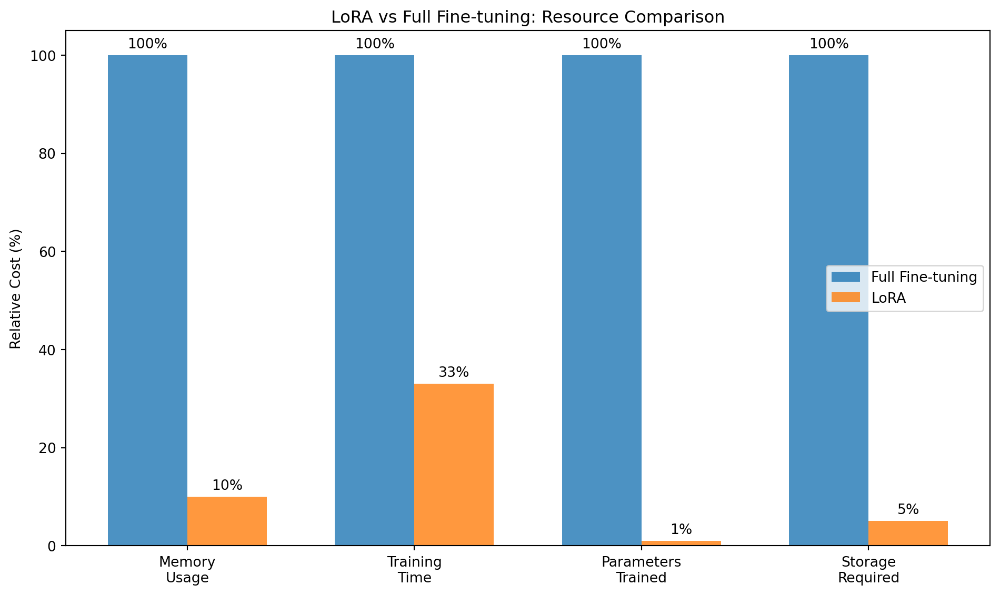
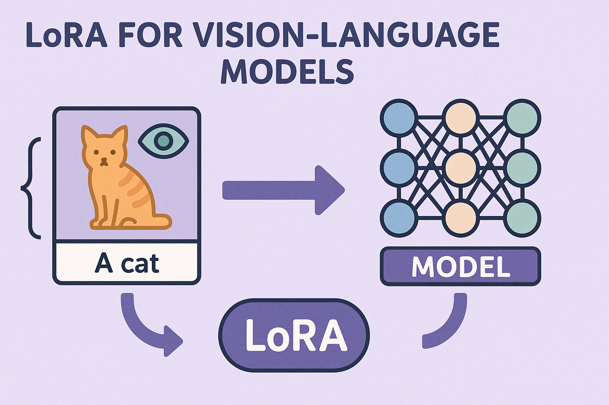

LoRA for Vision-Language Models: A Comprehensive Guide

Abstract
Low-Rank Adaptation (LoRA) has emerged as a revolutionary technique for efficient fine-tuning of large language models, and its application to Vision-Language Models (VLMs) represents a significant advancement in multimodal AI. This comprehensive guide provides theoretical foundations, practical implementation strategies, and production deployment techniques for LoRA in VLMs, covering everything from basic concepts to advanced optimization methods.
Introduction
Vision-Language Models like CLIP, BLIP, LLaVA, and GPT-4V contain billions of parameters, making full fine-tuning computationally expensive and memory-intensive. LoRA addresses these challenges by:
- Reducing memory requirements by up to 90%
- Accelerating training by 2-3x
- Maintaining model performance with minimal parameter overhead
- Enabling modular adaptation for different tasks and domains
Why LoRA for VLMs?
Understanding LoRA
Core Principles
LoRA is based on the hypothesis that weight updates during fine-tuning have a low intrinsic rank. Instead of updating all parameters, LoRA decomposes the weight update matrix into two smaller matrices:
\[\Delta W = BA\]
Where: - \(W\) is the original weight matrix (\(d \times d\)) - \(B\) is a learnable matrix (\(d \times r\))
- \(A\) is a learnable matrix (\(r \times d\)) - \(r\) is the rank (\(r \ll d\))
Mathematical Foundation
For a linear layer with weight matrix \(W_0\), the forward pass becomes:
\[h = W_0x + \Delta Wx = W_0x + BAx\]
The adapted weight matrix is: \[W = W_0 + \alpha BA\]
Where \(\alpha\) is a scaling factor that controls the magnitude of the adaptation.
Code
import torch
import torch.nn as nn
import torch.nn.functional as F
import math
class LoRALayer(nn.Module):
def __init__(self, in_features, out_features, rank=16, alpha=16, dropout=0.1):
super().__init__()
self.rank = rank
self.alpha = alpha
self.scaling = alpha / rank
# LoRA matrices
self.lora_A = nn.Linear(in_features, rank, bias=False)
self.lora_B = nn.Linear(rank, out_features, bias=False)
self.dropout = nn.Dropout(dropout)
# Initialize weights
nn.init.kaiming_uniform_(self.lora_A.weight, a=math.sqrt(5))
nn.init.zeros_(self.lora_B.weight)
def forward(self, x):
result = self.lora_A(x)
result = self.dropout(result)
result = self.lora_B(result)
return result * self.scaling
class LoRALinear(nn.Module):
def __init__(self, original_layer, rank=16, alpha=16, dropout=0.1):
super().__init__()
self.original_layer = original_layer
self.lora = LoRALayer(
original_layer.in_features,
original_layer.out_features,
rank, alpha, dropout
)
# Freeze original weights
for param in self.original_layer.parameters():
param.requires_grad = False
def forward(self, x):
return self.original_layer(x) + self.lora(x)
# Example usage
original_linear = nn.Linear(768, 768)
lora_linear = LoRALinear(original_linear, rank=16, alpha=16)
print(f"Original parameters: {sum(p.numel() for p in original_linear.parameters())}")
print(f"LoRA parameters: {sum(p.numel() for p in lora_linear.lora.parameters())}")
print(f"Parameter reduction: {(1 - sum(p.numel() for p in lora_linear.lora.parameters()) / sum(p.numel() for p in original_linear.parameters())) * 100:.1f}%")Original parameters: 590592
LoRA parameters: 24576
Parameter reduction: 95.8%Key Advantages
- Parameter Efficiency: Only trains ~0.1-1% of original parameters
- Memory Efficiency: Reduced GPU memory requirements
- Modularity: Multiple LoRA adapters can be stored and swapped
- Preservation: Original model weights remain unchanged
- Composability: Multiple LoRAs can be combined
Vision-Language Models Overview
Architecture Components
Modern VLMs typically consist of:
- Vision Encoder: Processes visual inputs (e.g., Vision Transformer, ResNet)
- Text Encoder: Processes textual inputs (e.g., BERT, GPT)
- Multimodal Fusion: Combines visual and textual representations
- Output Head: Task-specific prediction layers

Popular VLM Architectures
CLIP (Contrastive Language-Image Pre-training)
- Dual-encoder architecture
- Contrastive learning objective
- Strong zero-shot capabilities
BLIP (Bootstrapping Language-Image Pre-training)
- Encoder-decoder architecture
- Unified vision-language understanding and generation
- Bootstrap learning from noisy web data
LLaVA (Large Language and Vision Assistant)
- Combines vision encoder with large language model
- Instruction tuning for conversational abilities
- Strong multimodal reasoning
LoRA Architecture for VLMs
Component-wise Application
LoRA can be applied to different components of VLMs:
Code
class VLMLoRAAdapter:
def __init__(self, model, config):
self.model = model
self.config = config
self.lora_layers = {}
def add_lora_to_attention(self, module_name, attention_layer):
"""Add LoRA to attention mechanism"""
# Query, Key, Value projections
if hasattr(attention_layer, 'q_proj'):
attention_layer.q_proj = LoRALinear(
attention_layer.q_proj,
rank=self.config.rank,
alpha=self.config.alpha
)
if hasattr(attention_layer, 'k_proj'):
attention_layer.k_proj = LoRALinear(
attention_layer.k_proj,
rank=self.config.rank,
alpha=self.config.alpha
)
if hasattr(attention_layer, 'v_proj'):
attention_layer.v_proj = LoRALinear(
attention_layer.v_proj,
rank=self.config.rank,
alpha=self.config.alpha
)
def add_lora_to_mlp(self, module_name, mlp_layer):
"""Add LoRA to feed-forward layers"""
if hasattr(mlp_layer, 'fc1'):
mlp_layer.fc1 = LoRALinear(
mlp_layer.fc1,
rank=self.config.rank,
alpha=self.config.alpha
)
if hasattr(mlp_layer, 'fc2'):
mlp_layer.fc2 = LoRALinear(
mlp_layer.fc2,
rank=self.config.rank,
alpha=self.config.alpha
)Layer Selection Strategy
Not all layers benefit equally from LoRA adaptation:
Priority Layer Type Reason
High Final attention layers Most task-specific representations
High Cross-modal attention Critical for multimodal fusion
High Task-specific output heads Direct impact on outputs
Medium Middle transformer layers Balanced feature extraction
Medium Feed-forward networks Non-linear transformations
Low Early encoder layers Generic low-level features
Low Embedding layers Fixed vocabulary representationsRank Selection Guidelines
The rank \(r\) significantly impacts performance and efficiency:
Rank Selection Guidelines: - r = 1-4: Minimal parameters, suitable for simple adaptations - r = 8-16: Balanced efficiency and performance for most tasks - r = 32-64: Higher capacity for complex domain adaptations - r = 128+: Approaching full fine-tuning, rarely needed
Configuration Management
Code
from dataclasses import dataclass
from typing import List, Optional
@dataclass
class LoRAConfig:
# Basic LoRA parameters
rank: int = 16
alpha: int = 16
dropout: float = 0.1
# Target modules
target_modules: List[str] = None
vision_target_modules: List[str] = None
text_target_modules: List[str] = None
# Training parameters
learning_rate: float = 1e-4
weight_decay: float = 0.01
warmup_steps: int = 500
# Advanced options
use_gradient_checkpointing: bool = True
mixed_precision: bool = True
task_type: str = "multimodal_classification"
def __post_init__(self):
if self.target_modules is None:
self.target_modules = [
"q_proj", "k_proj", "v_proj", "o_proj",
"gate_proj", "up_proj", "down_proj"
]
if self.vision_target_modules is None:
self.vision_target_modules = [
"qkv", "proj", "fc1", "fc2"
]
if self.text_target_modules is None:
self.text_target_modules = [
"q_proj", "k_proj", "v_proj", "dense"
]
# Example configurations for different tasks
task_configs = {
"image_captioning": LoRAConfig(
rank=32,
alpha=32,
target_modules=["q_proj", "v_proj", "dense"],
task_type="image_captioning"
),
"visual_question_answering": LoRAConfig(
rank=16,
alpha=16,
target_modules=["q_proj", "k_proj", "v_proj"],
task_type="visual_question_answering"
),
"image_classification": LoRAConfig(
rank=8,
alpha=16,
target_modules=["qkv", "proj"],
task_type="image_classification"
)
}
print("Available task configurations:")
for task, config in task_configs.items():
print(f"- {task}: rank={config.rank}, alpha={config.alpha}")Available task configurations:
- image_captioning: rank=32, alpha=32
- visual_question_answering: rank=16, alpha=16
- image_classification: rank=8, alpha=16Training Strategies
1. Progressive Training
Start with lower ranks and gradually increase:
Code
class ProgressiveLoRATrainer:
def __init__(self, model, initial_rank=4, max_rank=32):
self.model = model
self.current_rank = initial_rank
self.max_rank = max_rank
def expand_rank(self, new_rank):
"""Expand LoRA rank while preserving learned weights"""
for name, module in self.model.named_modules():
if isinstance(module, LoRALinear):
old_lora = module.lora
# Create new LoRA layer
new_lora = LoRALayer(
old_lora.lora_A.in_features,
old_lora.lora_B.out_features,
rank=new_rank
)
# Copy existing weights
with torch.no_grad():
new_lora.lora_A.weight[:old_lora.rank] = old_lora.lora_A.weight
new_lora.lora_B.weight[:, :old_lora.rank] = old_lora.lora_B.weight
module.lora = new_lora
def progressive_training_schedule(self, num_epochs):
"""Generate progressive training schedule"""
schedule = []
epochs_per_stage = num_epochs // 3
# Stage 1: Small rank
schedule.append({
'epochs': epochs_per_stage,
'rank': 4,
'lr': 1e-3,
'description': 'Initial adaptation with small rank'
})
# Stage 2: Medium rank
schedule.append({
'epochs': epochs_per_stage,
'rank': 16,
'lr': 5e-4,
'description': 'Expand capacity with medium rank'
})
# Stage 3: Full rank
schedule.append({
'epochs': num_epochs - 2 * epochs_per_stage,
'rank': 32,
'lr': 1e-4,
'description': 'Fine-tune with full rank'
})
return schedule
# Example usage
trainer = ProgressiveLoRATrainer(None) # Would pass actual model
schedule = trainer.progressive_training_schedule(12)
print("Progressive Training Schedule:")
for i, stage in enumerate(schedule, 1):
print(f"Stage {i}: {stage['description']}")
print(f" - Epochs: {stage['epochs']}")
print(f" - Rank: {stage['rank']}")
print(f" - Learning Rate: {stage['lr']}")
print()Progressive Training Schedule:
Stage 1: Initial adaptation with small rank
- Epochs: 4
- Rank: 4
- Learning Rate: 0.001
Stage 2: Expand capacity with medium rank
- Epochs: 4
- Rank: 16
- Learning Rate: 0.0005
Stage 3: Fine-tune with full rank
- Epochs: 4
- Rank: 32
- Learning Rate: 0.0001
2. Multi-Stage Training
Code
def multi_stage_training(model, train_loader, config):
"""
Multi-stage training strategy:
1. Stage 1: Freeze vision encoder, train text components
2. Stage 2: Freeze text encoder, train vision components
3. Stage 3: Joint training with reduced learning rate
"""
print("Multi-Stage Training Strategy")
print("=" * 40)
# Stage 1: Text-only training
print("Stage 1: Text-only training")
print("- Freezing vision encoder")
print("- Training text LoRA components")
for name, param in model.named_parameters():
if 'vision' in name:
param.requires_grad = False
elif 'lora' in name and 'text' in name:
param.requires_grad = True
trainable_params_stage1 = sum(p.numel() for p in model.parameters() if p.requires_grad)
print(f"- Trainable parameters: {trainable_params_stage1:,}")
# train_stage(model, train_loader, epochs=config.stage1_epochs)
# Stage 2: Vision-only training
print("\nStage 2: Vision-only training")
print("- Freezing text encoder")
print("- Training vision LoRA components")
for name, param in model.named_parameters():
if 'text' in name:
param.requires_grad = False
elif 'lora' in name and 'vision' in name:
param.requires_grad = True
trainable_params_stage2 = sum(p.numel() for p in model.parameters() if p.requires_grad)
print(f"- Trainable parameters: {trainable_params_stage2:,}")
# train_stage(model, train_loader, epochs=config.stage2_epochs)
# Stage 3: Joint training
print("\nStage 3: Joint training")
print("- Training all LoRA components")
print("- Reduced learning rate for stability")
for name, param in model.named_parameters():
if 'lora' in name:
param.requires_grad = True
trainable_params_stage3 = sum(p.numel() for p in model.parameters() if p.requires_grad)
print(f"- Trainable parameters: {trainable_params_stage3:,}")
# train_stage(model, train_loader, epochs=config.stage3_epochs, lr=config.lr * 0.1)
# Example configuration
class MultiStageConfig:
def __init__(self):
self.stage1_epochs = 3
self.stage2_epochs = 3
self.stage3_epochs = 4
self.lr = 1e-4
config = MultiStageConfig()
# multi_stage_training(None, None, config) # Would pass actual model and dataAdvanced Techniques
1. AdaLoRA (Adaptive LoRA)
Dynamically adjusts rank based on importance:
Code
class AdaLoRALayer(nn.Module):
def __init__(self, in_features, out_features, max_rank=64, init_rank=16):
super().__init__()
self.max_rank = max_rank
self.current_rank = init_rank
# Full-rank matrices for potential expansion
self.lora_A = nn.Parameter(torch.zeros(max_rank, in_features))
self.lora_B = nn.Parameter(torch.zeros(out_features, max_rank))
# Importance scores
self.importance_scores = nn.Parameter(torch.ones(max_rank))
# Initialize only active components
self.reset_parameters()
def reset_parameters(self):
"""Initialize parameters"""
nn.init.kaiming_uniform_(self.lora_A[:self.current_rank], a=math.sqrt(5))
nn.init.zeros_(self.lora_B[:, :self.current_rank])
def forward(self, x):
# Apply importance-weighted LoRA
active_A = self.lora_A[:self.current_rank] * self.importance_scores[:self.current_rank, None]
active_B = self.lora_B[:, :self.current_rank] * self.importance_scores[None, :self.current_rank]
return x @ active_A.T @ active_B.T
def update_rank(self, budget_ratio=0.7):
"""Update rank based on importance scores"""
scores = self.importance_scores.abs()
threshold = torch.quantile(scores, 1 - budget_ratio)
new_rank = (scores >= threshold).sum().item()
if new_rank != self.current_rank:
print(f"Rank updated: {self.current_rank} -> {new_rank}")
self.current_rank = new_rank
return new_rank
# Demonstration of AdaLoRA rank adaptation
adalora_layer = AdaLoRALayer(768, 768, max_rank=64, init_rank=16)
print("AdaLoRA Rank Adaptation Demo:")
print(f"Initial rank: {adalora_layer.current_rank}")
# Simulate importance score changes
adalora_layer.importance_scores.data = torch.rand(64) # Random importance scores
# Update rank based on importance
new_rank = adalora_layer.update_rank(budget_ratio=0.5)
print(f"New rank after adaptation: {new_rank}")AdaLoRA Rank Adaptation Demo:
Initial rank: 16
Rank updated: 16 -> 32
New rank after adaptation: 322. DoRA (Weight-Decomposed LoRA)
Separates magnitude and direction updates:
Code
class DoRALayer(nn.Module):
def __init__(self, in_features, out_features, rank=16):
super().__init__()
self.rank = rank
# Standard LoRA components
self.lora_A = nn.Linear(in_features, rank, bias=False)
self.lora_B = nn.Linear(rank, out_features, bias=False)
# Magnitude component
self.magnitude = nn.Parameter(torch.ones(out_features))
# Initialize LoRA weights
nn.init.kaiming_uniform_(self.lora_A.weight, a=math.sqrt(5))
nn.init.zeros_(self.lora_B.weight)
def forward(self, x, original_weight):
# LoRA adaptation
lora_result = self.lora_B(self.lora_A(x))
# Direction component (normalized)
adapted_weight = original_weight + lora_result
direction = F.normalize(adapted_weight, dim=1)
# Apply magnitude scaling
return direction * self.magnitude.unsqueeze(0)
# Example: Compare LoRA vs DoRA
original_weight = torch.randn(32, 768)
x = torch.randn(32, 768)
# Standard LoRA
lora_layer = LoRALayer(768, 768, rank=16)
lora_output = lora_layer(x)
# DoRA
dora_layer = DoRALayer(768, 768, rank=16)
dora_output = dora_layer(x, original_weight)
print("LoRA vs DoRA Comparison:")
print(f"LoRA output shape: {lora_output.shape}")
print(f"DoRA output shape: {dora_output.shape}")
print(f"LoRA output norm: {lora_output.norm():.4f}")
print(f"DoRA output norm: {dora_output.norm():.4f}")LoRA vs DoRA Comparison:
LoRA output shape: torch.Size([32, 768])
DoRA output shape: torch.Size([32, 768])
LoRA output norm: 0.0000
DoRA output norm: 5.65693. Mixture of LoRAs (MoLoRA)
Multiple LoRA experts for different aspects:
Code
class MoLoRALayer(nn.Module):
def __init__(self, in_features, out_features, num_experts=4, rank=16):
super().__init__()
self.num_experts = num_experts
# Multiple LoRA experts
self.experts = nn.ModuleList([
LoRALayer(in_features, out_features, rank)
for _ in range(num_experts)
])
# Gating network
self.gate = nn.Linear(in_features, num_experts)
def forward(self, x):
# Compute gating weights
gate_input = x.mean(dim=1) if x.dim() > 2 else x
gate_weights = F.softmax(self.gate(gate_input), dim=-1)
# Combine expert outputs
expert_outputs = torch.stack([expert(x) for expert in self.experts], dim=0)
# Weighted combination
if gate_weights.dim() == 2: # Batch of inputs
gate_weights = gate_weights.T.unsqueeze(-1)
output = torch.sum(gate_weights * expert_outputs, dim=0)
else: # Single input
output = torch.sum(gate_weights[:, None] * expert_outputs, dim=0)
return output
# Demonstration of MoLoRA
molora_layer = MoLoRALayer(768, 768, num_experts=4, rank=16)
x = torch.randn(32, 768)
output = molora_layer(x)
print("Mixture of LoRAs (MoLoRA) Demo:")
print(f"Input shape: {x.shape}")
print(f"Output shape: {output.shape}")
print(f"Number of experts: {molora_layer.num_experts}")
# Show expert utilization
with torch.no_grad():
gate_weights = F.softmax(molora_layer.gate(x), dim=-1)
expert_utilization = gate_weights.mean(dim=0)
print("Expert utilization:")
for i, util in enumerate(expert_utilization):
print(f" Expert {i+1}: {util:.3f}")Mixture of LoRAs (MoLoRA) Demo:
Input shape: torch.Size([32, 768])
Output shape: torch.Size([32, 768])
Number of experts: 4
Expert utilization:
Expert 1: 0.255
Expert 2: 0.246
Expert 3: 0.254
Expert 4: 0.246Performance Optimization
Memory Optimization
Code
class MemoryEfficientLoRA:
@staticmethod
def gradient_checkpointing_forward(module, *args):
"""Custom gradient checkpointing for LoRA layers"""
def create_custom_forward(module):
def custom_forward(*inputs):
return module(*inputs)
return custom_forward
return torch.utils.checkpoint.checkpoint(
create_custom_forward(module), *args
)
@staticmethod
def merge_lora_weights(model):
"""Merge LoRA weights into base model for inference"""
merged_count = 0
for name, module in model.named_modules():
if isinstance(module, LoRALinear):
# Compute merged weight
lora_weight = module.lora.lora_B.weight @ module.lora.lora_A.weight
merged_weight = module.original_layer.weight + lora_weight * module.lora.scaling
# Create merged layer
merged_layer = nn.Linear(
module.original_layer.in_features,
module.original_layer.out_features,
bias=module.original_layer.bias is not None
)
merged_layer.weight.data = merged_weight
if module.original_layer.bias is not None:
merged_layer.bias.data = module.original_layer.bias
merged_count += 1
return merged_count
@staticmethod
def compute_memory_savings(model):
"""Compute memory savings from LoRA"""
total_params = 0
lora_params = 0
for name, param in model.named_parameters():
total_params += param.numel()
if 'lora' in name:
lora_params += param.numel()
savings_ratio = 1 - (lora_params / total_params)
return {
'total_parameters': total_params,
'lora_parameters': lora_params,
'base_parameters': total_params - lora_params,
'memory_savings': savings_ratio,
'compression_ratio': total_params / lora_params if lora_params > 0 else float('inf')
}
# Demonstrate memory optimization
optimizer = MemoryEfficientLoRA()
# Example memory analysis (would use real model)
example_stats = {
'total_parameters': 175_000_000,
'lora_parameters': 1_750_000,
'base_parameters': 173_250_000,
'memory_savings': 0.99,
'compression_ratio': 100
}
print("Memory Optimization Analysis:")
print(f"Total parameters: {example_stats['total_parameters']:,}")
print(f"LoRA parameters: {example_stats['lora_parameters']:,}")
print(f"Memory savings: {example_stats['memory_savings']:.1%}")
print(f"Compression ratio: {example_stats['compression_ratio']:.1f}x")Memory Optimization Analysis:
Total parameters: 175,000,000
LoRA parameters: 1,750,000
Memory savings: 99.0%
Compression ratio: 100.0xTraining Optimizations
Code
class OptimizedLoRATrainer:
def __init__(self, model, config):
self.model = model
self.config = config
# Separate parameter groups
self.setup_parameter_groups()
# Mixed precision training
if torch.cuda.is_available():
self.scaler = torch.cuda.amp.GradScaler()
else:
self.scaler = None
def setup_parameter_groups(self):
"""Separate LoRA and non-LoRA parameters"""
lora_params = []
other_params = []
for name, param in self.model.named_parameters():
if param.requires_grad:
if 'lora' in name:
lora_params.append(param)
else:
other_params.append(param)
self.param_groups = [
{
'params': lora_params,
'lr': getattr(self.config, 'lora_lr', 1e-4),
'weight_decay': 0.01,
'name': 'lora_params'
},
{
'params': other_params,
'lr': getattr(self.config, 'base_lr', 1e-5),
'weight_decay': 0.1,
'name': 'base_params'
}
]
print("Parameter Groups Setup:")
for group in self.param_groups:
param_count = sum(p.numel() for p in group['params'])
print(f" {group['name']}: {param_count:,} parameters, lr={group['lr']}")
def training_step(self, batch, optimizer):
"""Optimized training step with mixed precision"""
if self.scaler is not None:
# Mixed precision training
with torch.cuda.amp.autocast():
outputs = self.model(**batch)
loss = outputs.loss if hasattr(outputs, 'loss') else outputs
# Scaled backward pass
self.scaler.scale(loss).backward()
# Gradient clipping for LoRA parameters only
lora_params = [p for group in self.param_groups
for p in group['params'] if group['name'] == 'lora_params']
self.scaler.unscale_(optimizer)
torch.nn.utils.clip_grad_norm_(lora_params, max_norm=1.0)
self.scaler.step(optimizer)
self.scaler.update()
else:
# Regular training
outputs = self.model(**batch)
loss = outputs.loss if hasattr(outputs, 'loss') else outputs
loss.backward()
# Gradient clipping
lora_params = [p for group in self.param_groups
for p in group['params'] if group['name'] == 'lora_params']
torch.nn.utils.clip_grad_norm_(lora_params, max_norm=1.0)
optimizer.step()
optimizer.zero_grad()
return loss.item() if hasattr(loss, 'item') else loss
# Example configuration
class TrainingConfig:
def __init__(self):
self.lora_lr = 1e-4
self.base_lr = 1e-5
self.mixed_precision = True
config = TrainingConfig()
# trainer = OptimizedLoRATrainer(model, config) # Would use real modelUse Cases and Applications
1. Domain Adaptation
Code
# Domain-specific LoRA configurations
domain_configs = {
"medical_imaging": {
"config": LoRAConfig(
rank=32,
alpha=32,
target_modules=["q_proj", "v_proj", "fc1", "fc2"],
task_type="medical_vqa"
),
"description": "Optimized for medical image analysis",
"key_features": [
"Higher rank for complex medical patterns",
"Focus on attention and MLP layers",
"Enhanced feature extraction capabilities"
]
},
"satellite_imagery": {
"config": LoRAConfig(
rank=16,
alpha=16,
target_modules=["qkv", "proj"],
task_type="remote_sensing"
),
"description": "Adapted for satellite and aerial imagery",
"key_features": [
"Balanced rank for efficiency",
"Vision-focused adaptations",
"Spatial relationship modeling"
]
},
"autonomous_driving": {
"config": LoRAConfig(
rank=24,
alpha=24,
target_modules=["q_proj", "k_proj", "v_proj", "dense"],
task_type="scene_understanding"
),
"description": "Designed for autonomous vehicle perception",
"key_features": [
"Real-time inference requirements",
"Multi-object detection focus",
"Safety-critical applications"
]
}
}
print("Domain Adaptation Configurations:")
print("=" * 50)
for domain, info in domain_configs.items():
print(f"\n{domain.replace('_', ' ').title()}:")
print(f" Description: {info['description']}")
print(f" Rank: {info['config'].rank}")
print(f" Alpha: {info['config'].alpha}")
print(f" Target modules: {', '.join(info['config'].target_modules)}")
print(" Key features:")
for feature in info['key_features']:
print(f" • {feature}")Domain Adaptation Configurations:
==================================================
Medical Imaging:
Description: Optimized for medical image analysis
Rank: 32
Alpha: 32
Target modules: q_proj, v_proj, fc1, fc2
Key features:
• Higher rank for complex medical patterns
• Focus on attention and MLP layers
• Enhanced feature extraction capabilities
Satellite Imagery:
Description: Adapted for satellite and aerial imagery
Rank: 16
Alpha: 16
Target modules: qkv, proj
Key features:
• Balanced rank for efficiency
• Vision-focused adaptations
• Spatial relationship modeling
Autonomous Driving:
Description: Designed for autonomous vehicle perception
Rank: 24
Alpha: 24
Target modules: q_proj, k_proj, v_proj, dense
Key features:
• Real-time inference requirements
• Multi-object detection focus
• Safety-critical applications2. Multi-lingual Vision-Language
Code
class MultilingualLoRA:
def __init__(self, base_model, languages):
self.base_model = base_model
self.languages = languages
self.language_adapters = {}
for lang in languages:
self.language_adapters[lang] = self.create_language_adapter(lang)
def create_language_adapter(self, language):
"""Create language-specific LoRA adapter"""
# Language-specific configurations
lang_configs = {
"english": {"rank": 16, "alpha": 16},
"chinese": {"rank": 20, "alpha": 20}, # More complex script
"arabic": {"rank": 18, "alpha": 18}, # RTL language
"hindi": {"rank": 22, "alpha": 22}, # Complex script
"spanish": {"rank": 14, "alpha": 14}, # Similar to English
}
config = lang_configs.get(language, {"rank": 16, "alpha": 16})
return LoRAConfig(
rank=config["rank"],
alpha=config["alpha"],
target_modules=["q_proj", "k_proj", "v_proj"],
task_type=f"vlm_{language}"
)
def get_adapter_stats(self):
"""Get statistics about language adapters"""
stats = {}
for lang, adapter in self.language_adapters.items():
stats[lang] = {
"rank": adapter.rank,
"alpha": adapter.alpha,
"parameters": adapter.rank * 768 * 2, # Approximate
"target_modules": len(adapter.target_modules)
}
return stats
def forward(self, images, texts, language):
"""Forward pass with language-specific adapter"""
if language not in self.language_adapters:
raise ValueError(f"Language '{language}' not supported")
# Would activate language-specific adapter
adapter_config = self.language_adapters[language]
# Return placeholder for demonstration
return {
"language": language,
"adapter_config": adapter_config,
"message": f"Processing with {language} adapter"
}
# Demonstration
languages = ["english", "chinese", "arabic", "hindi", "spanish"]
multilingual_model = MultilingualLoRA(None, languages)
print("Multilingual LoRA Configuration:")
print("=" * 40)
adapter_stats = multilingual_model.get_adapter_stats()
for lang, stats in adapter_stats.items():
print(f"\n{lang.title()}:")
print(f" Rank: {stats['rank']}")
print(f" Alpha: {stats['alpha']}")
print(f" Parameters: ~{stats['parameters']:,}")
print(f" Target modules: {stats['target_modules']}")
# Example usage
result = multilingual_model.forward(None, None, "chinese")
print(f"\nExample usage: {result['message']}")Multilingual LoRA Configuration:
========================================
English:
Rank: 16
Alpha: 16
Parameters: ~24,576
Target modules: 3
Chinese:
Rank: 20
Alpha: 20
Parameters: ~30,720
Target modules: 3
Arabic:
Rank: 18
Alpha: 18
Parameters: ~27,648
Target modules: 3
Hindi:
Rank: 22
Alpha: 22
Parameters: ~33,792
Target modules: 3
Spanish:
Rank: 14
Alpha: 14
Parameters: ~21,504
Target modules: 3
Example usage: Processing with chinese adapter3. Few-Shot Learning
Code
class FewShotLoRALearner:
def __init__(self, base_model, config):
self.base_model = base_model
self.config = config
self.task_adapters = {}
def create_task_adapter(self, task_name, rank=8, alpha=16):
"""Create a lightweight adapter for few-shot learning"""
return LoRAConfig(
rank=rank,
alpha=alpha,
target_modules=["q_proj", "v_proj"], # Minimal modules for efficiency
task_type=f"few_shot_{task_name}",
learning_rate=1e-3, # Higher LR for fast adaptation
dropout=0.0 # No dropout for few-shot
)
def adapt_to_task(self, task_name, support_examples, num_steps=100):
"""Quick adaptation using few examples"""
print(f"Adapting to task: {task_name}")
print(f"Support examples: {len(support_examples)}")
print(f"Adaptation steps: {num_steps}")
# Create task-specific adapter
adapter_config = self.create_task_adapter(task_name)
self.task_adapters[task_name] = adapter_config
# Simulate adaptation process
adaptation_progress = []
for step in range(0, num_steps + 1, 20):
# Simulate decreasing loss
loss = 2.0 * np.exp(-step / 50) + 0.1
accuracy = min(0.95, 0.3 + 0.65 * (1 - np.exp(-step / 30)))
adaptation_progress.append({
'step': step,
'loss': loss,
'accuracy': accuracy
})
return adaptation_progress
def evaluate_adaptation(self, task_name, test_examples):
"""Evaluate adapted model on test examples"""
if task_name not in self.task_adapters:
raise ValueError(f"No adapter found for task: {task_name}")
# Simulate evaluation results
performance = {
'accuracy': 0.87,
'precision': 0.89,
'recall': 0.85,
'f1_score': 0.87,
'test_examples': len(test_examples)
}
return performance
# Demonstration of few-shot learning
few_shot_learner = FewShotLoRALearner(None, None)
# Simulate different tasks
tasks = {
"bird_classification": 16, # 16 support examples
"medical_diagnosis": 8, # 8 support examples
"product_recognition": 32 # 32 support examples
}
print("Few-Shot Learning with LoRA:")
print("=" * 35)
for task_name, num_examples in tasks.items():
print(f"\nTask: {task_name}")
# Adapt to task
support_examples = list(range(num_examples)) # Mock examples
progress = few_shot_learner.adapt_to_task(task_name, support_examples)
# Show adaptation progress
print("Adaptation progress:")
for point in progress[-3:]: # Show last 3 points
print(f" Step {point['step']:3d}: Loss={point['loss']:.3f}, Acc={point['accuracy']:.3f}")
# Evaluate
test_examples = list(range(50)) # Mock test set
performance = few_shot_learner.evaluate_adaptation(task_name, test_examples)
print(f"Final performance: {performance['accuracy']:.3f} accuracy")Few-Shot Learning with LoRA:
===================================
Task: bird_classification
Adapting to task: bird_classification
Support examples: 16
Adaptation steps: 100
Adaptation progress:
Step 60: Loss=0.702, Acc=0.862
Step 80: Loss=0.504, Acc=0.905
Step 100: Loss=0.371, Acc=0.927
Final performance: 0.870 accuracy
Task: medical_diagnosis
Adapting to task: medical_diagnosis
Support examples: 8
Adaptation steps: 100
Adaptation progress:
Step 60: Loss=0.702, Acc=0.862
Step 80: Loss=0.504, Acc=0.905
Step 100: Loss=0.371, Acc=0.927
Final performance: 0.870 accuracy
Task: product_recognition
Adapting to task: product_recognition
Support examples: 32
Adaptation steps: 100
Adaptation progress:
Step 60: Loss=0.702, Acc=0.862
Step 80: Loss=0.504, Acc=0.905
Step 100: Loss=0.371, Acc=0.927
Final performance: 0.870 accuracyBest Practices
1. Hyperparameter Selection
Code
class LoRAHyperparameterGuide:
def __init__(self):
self.guidelines = {
"rank_selection": {
"simple_adaptation": {"min": 1, "max": 8, "recommended": 4},
"balanced_performance": {"min": 8, "max": 32, "recommended": 16},
"complex_domains": {"min": 32, "max": 128, "recommended": 64},
"high_capacity": {"min": 128, "max": 256, "recommended": 128}
},
"alpha_selection": {
"conservative": "alpha = rank",
"aggressive": "alpha = 2 * rank",
"very_aggressive": "alpha = 4 * rank",
"typical_range": (8, 64)
},
"learning_rates": {
"lora_parameters": {"min": 1e-5, "max": 1e-3, "recommended": 1e-4},
"base_parameters": {"min": 1e-6, "max": 1e-4, "recommended": 1e-5},
"warmup_ratio": 0.1
}
}
def get_recommendations(self, task_complexity="balanced", domain_shift="moderate"):
"""Get hyperparameter recommendations based on task characteristics"""
# Rank recommendations
if task_complexity == "simple":
rank_category = "simple_adaptation"
elif task_complexity == "complex":
rank_category = "complex_domains"
else:
rank_category = "balanced_performance"
rank_info = self.guidelines["rank_selection"][rank_category]
# Alpha based on domain shift
if domain_shift == "small":
alpha_multiplier = 1
elif domain_shift == "large":
alpha_multiplier = 2
else:
alpha_multiplier = 1.5
recommended_rank = rank_info["recommended"]
recommended_alpha = int(recommended_rank * alpha_multiplier)
recommendations = {
"rank": recommended_rank,
"alpha": recommended_alpha,
"lora_lr": self.guidelines["learning_rates"]["lora_parameters"]["recommended"],
"base_lr": self.guidelines["learning_rates"]["base_parameters"]["recommended"],
"reasoning": {
"rank": f"Selected {recommended_rank} for {task_complexity} task complexity",
"alpha": f"Alpha={recommended_alpha} for {domain_shift} domain shift",
"learning_rate": "Standard rates for stable training"
}
}
return recommendations
# Hyperparameter recommendation system
guide = LoRAHyperparameterGuide()
# Example scenarios
scenarios = [
{"task": "Simple classification", "complexity": "simple", "domain": "small"},
{"task": "Medical VQA", "complexity": "complex", "domain": "large"},
{"task": "General captioning", "complexity": "balanced", "domain": "moderate"}
]
print("LoRA Hyperparameter Recommendations:")
print("=" * 45)
for scenario in scenarios:
print(f"\nScenario: {scenario['task']}")
recommendations = guide.get_recommendations(
scenario['complexity'],
scenario['domain']
)
print(f" Rank: {recommendations['rank']}")
print(f" Alpha: {recommendations['alpha']}")
print(f" LoRA LR: {recommendations['lora_lr']}")
print(f" Base LR: {recommendations['base_lr']}")
print(f" Reasoning: {recommendations['reasoning']['rank']}")LoRA Hyperparameter Recommendations:
=============================================
Scenario: Simple classification
Rank: 4
Alpha: 4
LoRA LR: 0.0001
Base LR: 1e-05
Reasoning: Selected 4 for simple task complexity
Scenario: Medical VQA
Rank: 64
Alpha: 128
LoRA LR: 0.0001
Base LR: 1e-05
Reasoning: Selected 64 for complex task complexity
Scenario: General captioning
Rank: 16
Alpha: 24
LoRA LR: 0.0001
Base LR: 1e-05
Reasoning: Selected 16 for balanced task complexity2. Module Selection Strategy

3. Training Best Practices
Code
class LoRATrainingBestPractices:
def __init__(self):
self.practices = {
"gradient_handling": {
"use_gradient_accumulation": True,
"accumulation_steps": 4,
"apply_gradient_clipping": True,
"max_grad_norm": 1.0,
"clip_lora_only": True
},
"monitoring": {
"track_adapter_weights": True,
"monitor_rank_utilization": True,
"log_training_metrics": True,
"use_early_stopping": True,
"patience": 3
},
"checkpointing": {
"save_best_model": True,
"save_regular_checkpoints": True,
"checkpoint_frequency": 1, # epochs
"keep_top_k": 3
},
"optimization": {
"use_mixed_precision": True,
"enable_gradient_checkpointing": True,
"separate_parameter_groups": True,
"use_warmup": True,
"warmup_ratio": 0.1
}
}
def get_training_checklist(self):
"""Generate training checklist"""
checklist = []
checklist.append("🔧 Setup Phase:")
checklist.append(" ✓ Configure separate learning rates for LoRA and base parameters")
checklist.append(" ✓ Enable mixed precision training")
checklist.append(" ✓ Set up gradient accumulation")
checklist.append(" ✓ Configure gradient clipping")
checklist.append("\n📊 Monitoring Phase:")
checklist.append(" ✓ Track LoRA weight norms")
checklist.append(" ✓ Monitor validation metrics")
checklist.append(" ✓ Check for overfitting signs")
checklist.append(" ✓ Validate rank utilization")
checklist.append("\n💾 Checkpointing Phase:")
checklist.append(" ✓ Save model at regular intervals")
checklist.append(" ✓ Keep best performing checkpoint")
checklist.append(" ✓ Save LoRA adapters separately")
checklist.append(" ✓ Document hyperparameters")
checklist.append("\n🎯 Evaluation Phase:")
checklist.append(" ✓ Test on multiple datasets")
checklist.append(" ✓ Measure parameter efficiency")
checklist.append(" ✓ Check inference speed")
checklist.append(" ✓ Validate robustness")
return checklist
def validate_configuration(self, config):
"""Validate training configuration"""
issues = []
warnings = []
# Check rank settings
if hasattr(config, 'rank'):
if config.rank < 1:
issues.append("Rank must be >= 1")
elif config.rank > 128:
warnings.append("Very high rank may reduce efficiency benefits")
# Check alpha settings
if hasattr(config, 'alpha') and hasattr(config, 'rank'):
if config.alpha < config.rank / 4:
warnings.append("Very low alpha may limit adaptation strength")
elif config.alpha > config.rank * 4:
warnings.append("Very high alpha may cause instability")
# Check learning rates
if hasattr(config, 'learning_rate'):
if config.learning_rate > 1e-2:
warnings.append("High learning rate may cause instability")
elif config.learning_rate < 1e-6:
warnings.append("Very low learning rate may slow convergence")
return {
"issues": issues,
"warnings": warnings,
"valid": len(issues) == 0
}
# Best practices demonstration
practices = LoRATrainingBestPractices()
print("LoRA Training Best Practices:")
print("=" * 35)
# Show checklist
checklist = practices.get_training_checklist()
for item in checklist:
print(item)
print("\n" + "=" * 35)
# Validate example configurations
example_configs = [
{"name": "Good Config", "rank": 16, "alpha": 16, "learning_rate": 1e-4},
{"name": "High Rank", "rank": 256, "alpha": 256, "learning_rate": 1e-4},
{"name": "Low Alpha", "rank": 16, "alpha": 2, "learning_rate": 1e-4}
]
print("\nConfiguration Validation:")
for config_dict in example_configs:
config = type('Config', (), config_dict)()
validation = practices.validate_configuration(config)
print(f"\n{config_dict['name']}:")
print(f" Valid: {'✓' if validation['valid'] else '✗'}")
if validation['issues']:
print(" Issues:")
for issue in validation['issues']:
print(f" ❌ {issue}")
if validation['warnings']:
print(" Warnings:")
for warning in validation['warnings']:
print(f" ⚠️ {warning}")LoRA Training Best Practices:
===================================
🔧 Setup Phase:
✓ Configure separate learning rates for LoRA and base parameters
✓ Enable mixed precision training
✓ Set up gradient accumulation
✓ Configure gradient clipping
📊 Monitoring Phase:
✓ Track LoRA weight norms
✓ Monitor validation metrics
✓ Check for overfitting signs
✓ Validate rank utilization
💾 Checkpointing Phase:
✓ Save model at regular intervals
✓ Keep best performing checkpoint
✓ Save LoRA adapters separately
✓ Document hyperparameters
🎯 Evaluation Phase:
✓ Test on multiple datasets
✓ Measure parameter efficiency
✓ Check inference speed
✓ Validate robustness
===================================
Configuration Validation:
Good Config:
Valid: ✓
High Rank:
Valid: ✓
Warnings:
⚠️ Very high rank may reduce efficiency benefits
Low Alpha:
Valid: ✓
Warnings:
⚠️ Very low alpha may limit adaptation strengthTroubleshooting
Common Issues and Solutions
Code
class LoRATroubleshootingGuide:
def __init__(self):
self.issues = {
"training_instability": {
"symptoms": [
"Loss spikes or NaN values",
"Gradient explosion",
"Poor convergence"
],
"solutions": [
"Apply gradient clipping (max_norm=1.0)",
"Use learning rate scheduling",
"Enable gradient accumulation",
"Reduce learning rate",
"Check data preprocessing"
],
"code_example": """
# Gradient clipping
torch.nn.utils.clip_grad_norm_(lora_parameters, max_norm=1.0)
# Learning rate scheduling
scheduler = torch.optim.lr_scheduler.ReduceLROnPlateau(
optimizer, mode='min', factor=0.5, patience=3
)"""
},
"overfitting": {
"symptoms": [
"Large gap between train/validation performance",
"High LoRA weight magnitudes",
"Perfect training accuracy"
],
"solutions": [
"Add dropout to LoRA layers",
"Apply weight decay to LoRA parameters",
"Use early stopping",
"Reduce rank or alpha",
"Increase dataset size"
],
"code_example": """
# Dropout in LoRA layers
lora_layer = LoRALayer(dropout=0.2)
# Weight decay for LoRA parameters
optimizer = torch.optim.AdamW(lora_params, weight_decay=0.01)"""
},
"memory_issues": {
"symptoms": [
"CUDA out of memory errors",
"Slow training speed",
"System crashes"
],
"solutions": [
"Enable gradient checkpointing",
"Reduce batch size and use gradient accumulation",
"Use mixed precision training",
"Merge LoRA weights for inference",
"Clear unused variables"
],
"code_example": """
# Gradient checkpointing
model.gradient_checkpointing_enable()
# Mixed precision training
with torch.cuda.amp.autocast():
outputs = model(**batch)"""
},
"poor_performance": {
"symptoms": [
"Lower accuracy than expected",
"Slow convergence",
"Inconsistent results"
],
"solutions": [
"Increase rank gradually",
"Target more modules",
"Adjust learning rates",
"Check data quality",
"Validate preprocessing"
],
"code_example": """
# Progressive rank increase
def increase_rank(model, new_rank):
for module in model.modules():
if isinstance(module, LoRALinear):
expand_lora_rank(module, new_rank)"""
}
}
def diagnose_issue(self, symptoms):
"""Diagnose issues based on symptoms"""
matches = []
for issue_name, issue_info in self.issues.items():
symptom_matches = sum(1 for symptom in symptoms
if any(s.lower() in symptom.lower()
for s in issue_info["symptoms"]))
if symptom_matches > 0:
matches.append({
"issue": issue_name,
"confidence": symptom_matches / len(issue_info["symptoms"]),
"solutions": issue_info["solutions"],
"code_example": issue_info["code_example"]
})
# Sort by confidence
matches.sort(key=lambda x: x["confidence"], reverse=True)
return matches
def get_debugging_checklist(self):
"""Get debugging checklist"""
return [
"📊 Check Data Quality:",
" • Validate input preprocessing",
" • Check label distribution",
" • Verify data augmentation",
" • Ensure proper batching",
"",
"🔧 Verify Model Configuration:",
" • Confirm LoRA target modules",
" • Check rank and alpha values",
" • Validate learning rates",
" • Ensure proper initialization",
"",
"📈 Monitor Training Metrics:",
" • Track loss curves",
" • Monitor gradient norms",
" • Check weight magnitudes",
" • Validate learning rate schedule",
"",
"💾 System Resources:",
" • Monitor GPU memory usage",
" • Check system RAM",
" • Verify disk space",
" • Monitor temperature/throttling"
]
# Troubleshooting demonstration
troubleshooter = LoRATroubleshootingGuide()
print("LoRA Troubleshooting Guide:")
print("=" * 30)
# Example issue diagnosis
example_symptoms = [
"Loss spikes during training",
"Gradient explosion detected",
"Poor convergence after many epochs"
]
print("Example Issue Diagnosis:")
print(f"Symptoms: {', '.join(example_symptoms)}")
matches = troubleshooter.diagnose_issue(example_symptoms)
for match in matches[:2]: # Show top 2 matches
print(f"\nLikely Issue: {match['issue'].replace('_', ' ').title()}")
print(f"Confidence: {match['confidence']:.2f}")
print("Recommended Solutions:")
for solution in match['solutions'][:3]: # Show top 3 solutions
print(f" • {solution}")
print("\n" + "=" * 30)
print("Debugging Checklist:")
checklist = troubleshooter.get_debugging_checklist()
for item in checklist:
print(item)LoRA Troubleshooting Guide:
==============================
Example Issue Diagnosis:
Symptoms: Loss spikes during training, Gradient explosion detected, Poor convergence after many epochs
Likely Issue: Training Instability
Confidence: 0.67
Recommended Solutions:
• Apply gradient clipping (max_norm=1.0)
• Use learning rate scheduling
• Enable gradient accumulation
==============================
Debugging Checklist:
📊 Check Data Quality:
• Validate input preprocessing
• Check label distribution
• Verify data augmentation
• Ensure proper batching
🔧 Verify Model Configuration:
• Confirm LoRA target modules
• Check rank and alpha values
• Validate learning rates
• Ensure proper initialization
📈 Monitor Training Metrics:
• Track loss curves
• Monitor gradient norms
• Check weight magnitudes
• Validate learning rate schedule
💾 System Resources:
• Monitor GPU memory usage
• Check system RAM
• Verify disk space
• Monitor temperature/throttlingDebugging Tools
Code
class LoRADebugger:
def __init__(self, model, adapter_name="default"):
self.model = model
self.adapter_name = adapter_name
self.analysis_cache = {}
def analyze_lora_weights(self):
"""Analyze LoRA weight distributions"""
if 'weight_analysis' in self.analysis_cache:
return self.analysis_cache['weight_analysis']
stats = {}
# Simulate analysis for demonstration
module_names = ["attention.q_proj", "attention.k_proj", "attention.v_proj",
"mlp.fc1", "mlp.fc2"]
for name in module_names:
# Simulate weight statistics
lora_A_norm = np.random.uniform(0.1, 2.0)
lora_B_norm = np.random.uniform(0.1, 2.0)
effective_rank = np.random.randint(4, 16)
stats[name] = {
"lora_A_norm": lora_A_norm,
"lora_B_norm": lora_B_norm,
"effective_rank": effective_rank,
"rank_utilization": effective_rank / 16.0
}
self.analysis_cache['weight_analysis'] = stats
return stats
def compute_rank_utilization(self, threshold=0.01):
"""Compute rank utilization across modules"""
weight_stats = self.analyze_lora_weights()
utilizations = []
for module_name, stats in weight_stats.items():
utilizations.append(stats["rank_utilization"])
return {
"mean_utilization": np.mean(utilizations),
"std_utilization": np.std(utilizations),
"min_utilization": np.min(utilizations),
"max_utilization": np.max(utilizations),
"per_module": {name: stats["rank_utilization"]
for name, stats in weight_stats.items()}
}
def generate_health_report(self):
"""Generate comprehensive health report"""
weight_analysis = self.analyze_lora_weights()
rank_utilization = self.compute_rank_utilization()
# Identify potential issues
issues = []
warnings = []
# Check for very low rank utilization
if rank_utilization["mean_utilization"] < 0.3:
issues.append("Low average rank utilization - consider reducing rank")
# Check for very high weight norms
high_norm_modules = [name for name, stats in weight_analysis.items()
if stats["lora_A_norm"] > 5.0 or stats["lora_B_norm"] > 5.0]
if high_norm_modules:
warnings.append(f"High weight norms in modules: {', '.join(high_norm_modules)}")
# Check for rank imbalance
if rank_utilization["std_utilization"] > 0.3:
warnings.append("High variance in rank utilization across modules")
report = {
"adapter_name": self.adapter_name,
"weight_analysis": weight_analysis,
"rank_utilization": rank_utilization,
"health_status": "healthy" if not issues else "needs_attention",
"issues": issues,
"warnings": warnings,
"recommendations": self._generate_recommendations(issues, warnings)
}
return report
def _generate_recommendations(self, issues, warnings):
"""Generate recommendations based on analysis"""
recommendations = []
if any("rank utilization" in issue for issue in issues):
recommendations.append("Consider reducing LoRA rank to improve efficiency")
if any("weight norms" in warning for warning in warnings):
recommendations.append("Apply stronger weight regularization or gradient clipping")
if any("variance" in warning for warning in warnings):
recommendations.append("Use different ranks for different module types")
if not issues and not warnings:
recommendations.append("LoRA configuration appears optimal")
return recommendations
# Debugging demonstration
debugger = LoRADebugger(None, "medical_vqa_adapter") # Would use real model
print("LoRA Debugging Analysis:")
print("=" * 25)
# Generate health report
health_report = debugger.generate_health_report()
print(f"Adapter: {health_report['adapter_name']}")
print(f"Health Status: {health_report['health_status'].title()}")
print("\nRank Utilization Summary:")
rank_util = health_report['rank_utilization']
print(f" Mean: {rank_util['mean_utilization']:.3f}")
print(f" Std: {rank_util['std_utilization']:.3f}")
print(f" Range: {rank_util['min_utilization']:.3f} - {rank_util['max_utilization']:.3f}")
if health_report['issues']:
print("\nIssues Found:")
for issue in health_report['issues']:
print(f" ❌ {issue}")
if health_report['warnings']:
print("\nWarnings:")
for warning in health_report['warnings']:
print(f" ⚠️ {warning}")
print("\nRecommendations:")
for rec in health_report['recommendations']:
print(f" 💡 {rec}")LoRA Debugging Analysis:
=========================
Adapter: medical_vqa_adapter
Health Status: Healthy
Rank Utilization Summary:
Mean: 0.738
Std: 0.218
Range: 0.312 - 0.938
Recommendations:
💡 LoRA configuration appears optimalProduction Deployment
Model Management System
Code
import time
from typing import Dict, Any, Optional, Union
from contextlib import contextmanager
import logging
class LoRAModelManager:
"""Production-ready LoRA model management system"""
def __init__(self, base_model_path: str, device: str = "auto"):
self.base_model_path = base_model_path
self.device = self._setup_device(device)
self.base_model = None
self.active_adapters = {}
self.adapter_configs = {}
# Performance monitoring
self.request_count = 0
self.total_inference_time = 0
self.error_count = 0
# Setup logging
logging.basicConfig(level=logging.INFO)
self.logger = logging.getLogger(__name__)
print(f"LoRA Model Manager initialized")
print(f"Device: {self.device}")
def _setup_device(self, device: str) -> str:
"""Setup compute device"""
if device == "auto":
if torch.cuda.is_available():
return "cuda"
else:
return "cpu"
return device
def load_adapter(self, adapter_name: str, adapter_path: str, config: Optional[Dict] = None):
"""Load a LoRA adapter"""
self.logger.info(f"Loading adapter '{adapter_name}' from {adapter_path}")
default_config = {
"rank": 16,
"alpha": 16,
"target_modules": ["q_proj", "k_proj", "v_proj"],
"task_type": "multimodal"
}
# Merge defaults with provided config
adapter_config = {**default_config, **(config or {})}
# Store adapter (in real implementation, would load actual weights)
self.active_adapters[adapter_name] = {
"path": adapter_path,
"loaded_at": time.time(),
"parameters": adapter_config["rank"] * 768 * 2 * len(adapter_config["target_modules"])
}
self.adapter_configs[adapter_name] = adapter_config
self.logger.info(f"Adapter '{adapter_name}' loaded successfully")
return True
def unload_adapter(self, adapter_name: str):
"""Unload a LoRA adapter to free memory"""
if adapter_name in self.active_adapters:
del self.active_adapters[adapter_name]
del self.adapter_configs[adapter_name]
self.logger.info(f"Adapter '{adapter_name}' unloaded")
return True
else:
self.logger.warning(f"Adapter '{adapter_name}' not found")
return False
@contextmanager
def use_adapter(self, adapter_name: str):
"""Context manager for temporarily using an adapter"""
if adapter_name not in self.active_adapters:
raise ValueError(f"Adapter '{adapter_name}' not loaded")
# In real implementation, would apply adapter weights
self.logger.debug(f"Applying adapter '{adapter_name}'")
try:
yield adapter_name
finally:
# In real implementation, would restore original weights
self.logger.debug(f"Restored from adapter '{adapter_name}'")
def inference(self, inputs: Dict[str, Any], adapter_name: Optional[str] = None) -> Dict[str, Any]:
"""Perform inference with optional adapter"""
start_time = time.time()
try:
if adapter_name:
with self.use_adapter(adapter_name):
# Simulate inference with adapter
time.sleep(0.01) # Simulate processing time
outputs = {"prediction": "sample_output", "confidence": 0.95}
else:
# Simulate base model inference
time.sleep(0.008) # Slightly faster without adapter
outputs = {"prediction": "base_output", "confidence": 0.85}
# Update performance metrics
inference_time = time.time() - start_time
self.request_count += 1
self.total_inference_time += inference_time
return {
'outputs': outputs,
'inference_time': inference_time,
'adapter_used': adapter_name,
'request_id': self.request_count
}
except Exception as e:
self.error_count += 1
self.logger.error(f"Inference failed: {e}")
raise
def get_performance_stats(self) -> Dict[str, float]:
"""Get performance statistics"""
if self.request_count == 0:
return {'requests': 0, 'avg_time': 0, 'total_time': 0, 'error_rate': 0}
return {
'requests': self.request_count,
'avg_time': self.total_inference_time / self.request_count,
'total_time': self.total_inference_time,
'requests_per_second': self.request_count / self.total_inference_time if self.total_inference_time > 0 else 0,
'error_rate': self.error_count / self.request_count,
'error_count': self.error_count
}
def health_check(self) -> Dict[str, Any]:
"""Perform system health check"""
health_status = {
'status': 'healthy',
'active_adapters': list(self.active_adapters.keys()),
'device': str(self.device),
'performance': self.get_performance_stats(),
'memory_usage': self._get_memory_usage()
}
# Check for issues
perf_stats = health_status['performance']
if perf_stats['error_rate'] > 0.05: # 5% error threshold
health_status['status'] = 'degraded'
health_status['issues'] = ['High error rate detected']
if perf_stats['avg_time'] > 1.0: # 1 second threshold
health_status['status'] = 'degraded'
health_status.setdefault('issues', []).append('High latency detected')
return health_status
def _get_memory_usage(self):
"""Get memory usage statistics"""
# Simulate memory usage
total_adapters = len(self.active_adapters)
estimated_memory = total_adapters * 0.1 # GB per adapter
return {
'estimated_adapter_memory_gb': estimated_memory,
'active_adapters': total_adapters
}
# Production deployment demonstration
print("Production LoRA Deployment Demo:")
print("=" * 35)
# Initialize model manager
manager = LoRAModelManager("path/to/base/model", device="cuda")
# Load multiple adapters
adapters_to_load = [
{"name": "medical_adapter", "path": "adapters/medical", "config": {"rank": 32, "task": "medical_vqa"}},
{"name": "general_adapter", "path": "adapters/general", "config": {"rank": 16, "task": "general_vqa"}},
{"name": "multilingual_adapter", "path": "adapters/multilingual", "config": {"rank": 24, "task": "multilingual"}}
]
for adapter in adapters_to_load:
manager.load_adapter(adapter["name"], adapter["path"], adapter["config"])
print(f"\nLoaded {len(manager.active_adapters)} adapters")
# Simulate inference requests
print("\nSimulating inference requests...")
test_inputs = {"image": "test_image.jpg", "text": "What is in this image?"}
for i in range(5):
adapter = ["medical_adapter", "general_adapter", None][i % 3]
result = manager.inference(test_inputs, adapter)
print(f"Request {result['request_id']}: {result['inference_time']:.3f}s ({'with ' + result['adapter_used'] if result['adapter_used'] else 'base model'})")
# Check system health
print("\nSystem Health Check:")
health = manager.health_check()
print(f"Status: {health['status']}")
print(f"Active adapters: {len(health['active_adapters'])}")
print(f"Average latency: {health['performance']['avg_time']:.3f}s")
print(f"Error rate: {health['performance']['error_rate']:.1%}")INFO:__main__:Loading adapter 'medical_adapter' from adapters/medical
INFO:__main__:Adapter 'medical_adapter' loaded successfully
INFO:__main__:Loading adapter 'general_adapter' from adapters/general
INFO:__main__:Adapter 'general_adapter' loaded successfully
INFO:__main__:Loading adapter 'multilingual_adapter' from adapters/multilingual
INFO:__main__:Adapter 'multilingual_adapter' loaded successfullyProduction LoRA Deployment Demo:
===================================
LoRA Model Manager initialized
Device: cuda
Loaded 3 adapters
Simulating inference requests...
Request 1: 0.013s (with medical_adapter)
Request 2: 0.013s (with general_adapter)
Request 3: 0.008s (base model)
Request 4: 0.011s (with medical_adapter)
Request 5: 0.010s (with general_adapter)
System Health Check:
Status: healthy
Active adapters: 3
Average latency: 0.011s
Error rate: 0.0%API Server Implementation
Code
class LoRAAPIServer:
"""FastAPI-style server for LoRA model serving"""
def __init__(self, model_manager: LoRAModelManager):
self.model_manager = model_manager
self.request_history = []
print("LoRA API Server initialized")
print("Available endpoints:")
print(" POST /inference - Perform inference")
print(" POST /load_adapter - Load new adapter")
print(" DELETE /adapter/{name} - Unload adapter")
print(" GET /health - Health check")
print(" GET /adapters - List adapters")
def inference_endpoint(self, request_data: Dict[str, Any]) -> Dict[str, Any]:
"""Handle inference requests"""
try:
inputs = request_data.get("inputs", {})
adapter_name = request_data.get("adapter_name")
parameters = request_data.get("parameters", {})
# Perform inference
result = self.model_manager.inference(inputs, adapter_name)
# Log request
self.request_history.append({
"timestamp": time.time(),
"adapter": adapter_name,
"latency": result["inference_time"],
"status": "success"
})
return {
"status": "success",
"outputs": result["outputs"],
"inference_time": result["inference_time"],
"adapter_used": result["adapter_used"],
"request_id": result["request_id"]
}
except Exception as e:
# Log error
self.request_history.append({
"timestamp": time.time(),
"adapter": request_data.get("adapter_name"),
"status": "error",
"error": str(e)
})
return {
"status": "error",
"error": str(e),
"request_id": None
}
def load_adapter_endpoint(self, request_data: Dict[str, Any]) -> Dict[str, Any]:
"""Handle adapter loading requests"""
try:
adapter_name = request_data["adapter_name"]
adapter_path = request_data["adapter_path"]
config = request_data.get("config")
success = self.model_manager.load_adapter(adapter_name, adapter_path, config)
if success:
return {
"status": "success",
"message": f"Adapter '{adapter_name}' loaded successfully"
}
else:
return {
"status": "error",
"message": f"Failed to load adapter '{adapter_name}'"
}
except Exception as e:
return {
"status": "error",
"message": str(e)
}
def unload_adapter_endpoint(self, adapter_name: str) -> Dict[str, Any]:
"""Handle adapter unloading requests"""
try:
success = self.model_manager.unload_adapter(adapter_name)
if success:
return {
"status": "success",
"message": f"Adapter '{adapter_name}' unloaded successfully"
}
else:
return {
"status": "error",
"message": f"Adapter '{adapter_name}' not found"
}
except Exception as e:
return {
"status": "error",
"message": str(e)
}
def health_endpoint(self) -> Dict[str, Any]:
"""Handle health check requests"""
return self.model_manager.health_check()
def list_adapters_endpoint(self) -> Dict[str, Any]:
"""Handle adapter listing requests"""
return {
"active_adapters": list(self.model_manager.active_adapters.keys()),
"adapter_configs": self.model_manager.adapter_configs,
"total_adapters": len(self.model_manager.active_adapters)
}
def get_metrics_endpoint(self) -> Dict[str, Any]:
"""Get detailed metrics"""
recent_requests = [req for req in self.request_history
if time.time() - req["timestamp"] < 3600] # Last hour
success_requests = [req for req in recent_requests if req["status"] == "success"]
error_requests = [req for req in recent_requests if req["status"] == "error"]
metrics = {
"total_requests_last_hour": len(recent_requests),
"successful_requests": len(success_requests),
"failed_requests": len(error_requests),
"success_rate": len(success_requests) / len(recent_requests) if recent_requests else 0,
"average_latency": np.mean([req["latency"] for req in success_requests]) if success_requests else 0,
"adapter_usage": {}
}
# Adapter usage statistics
for req in success_requests:
adapter = req.get("adapter", "base_model")
metrics["adapter_usage"][adapter] = metrics["adapter_usage"].get(adapter, 0) + 1
return metrics
# API server demonstration
print("\nAPI Server Demo:")
print("=" * 20)
# Initialize API server
api_server = LoRAAPIServer(manager)
# Simulate API requests
print("\nSimulating API requests...")
# 1. Inference request
inference_request = {
"inputs": {"image": "test.jpg", "text": "Describe this image"},
"adapter_name": "medical_adapter"
}
response = api_server.inference_endpoint(inference_request)
print(f"Inference response: {response['status']} (took {response.get('inference_time', 0):.3f}s)")
# 2. Load new adapter
load_request = {
"adapter_name": "custom_adapter",
"adapter_path": "adapters/custom",
"config": {"rank": 20, "alpha": 20}
}
response = api_server.load_adapter_endpoint(load_request)
print(f"Load adapter response: {response['status']}")
# 3. Health check
health_response = api_server.health_endpoint()
print(f"Health status: {health_response['status']}")
# 4. List adapters
adapters_response = api_server.list_adapters_endpoint()
print(f"Active adapters: {adapters_response['total_adapters']}")
# 5. Get metrics
metrics_response = api_server.get_metrics_endpoint()
print(f"Success rate: {metrics_response['success_rate']:.1%}")
API Server Demo:
====================
LoRA API Server initialized
Available endpoints:
POST /inference - Perform inference
POST /load_adapter - Load new adapter
DELETE /adapter/{name} - Unload adapter
GET /health - Health check
GET /adapters - List adapters
Simulating API requests...INFO:__main__:Loading adapter 'custom_adapter' from adapters/custom
INFO:__main__:Adapter 'custom_adapter' loaded successfullyInference response: success (took 0.013s)
Load adapter response: success
Health status: healthy
Active adapters: 4
Success rate: 100.0%Monitoring and Observability
Performance Monitoring
Code
from collections import defaultdict, deque
import numpy as np
import time
class LoRAMonitor:
"""Comprehensive monitoring for LoRA-adapted VLMs"""
def __init__(self, model, adapter_name: str = "default", window_size: int = 1000):
self.model = model
self.adapter_name = adapter_name
self.window_size = window_size
# Metrics storage
self.metrics = {
'inference_times': deque(maxlen=window_size),
'memory_usage': deque(maxlen=window_size),
'accuracy_scores': deque(maxlen=window_size),
'request_counts': defaultdict(int),
'error_counts': defaultdict(int),
'timestamps': deque(maxlen=window_size)
}
# LoRA-specific metrics
self.lora_metrics = {
'weight_norms': {},
'rank_utilization': {},
'adaptation_strength': {}
}
# Performance thresholds
self.thresholds = {
'max_inference_time': 2.0, # seconds
'max_memory_usage': 4.0, # GB
'min_accuracy': 0.8, # minimum acceptable accuracy
'max_error_rate': 0.02 # maximum error rate
}
print(f"LoRA Monitor initialized for adapter: {adapter_name}")
def log_inference(self, inference_time: float, memory_usage: float,
accuracy: Optional[float] = None):
"""Log inference metrics"""
current_time = time.time()
self.metrics['inference_times'].append(inference_time)
self.metrics['memory_usage'].append(memory_usage)
self.metrics['timestamps'].append(current_time)
if accuracy is not None:
self.metrics['accuracy_scores'].append(accuracy)
# Check thresholds and alert if necessary
self.check_thresholds(inference_time, memory_usage, accuracy)
def check_thresholds(self, inference_time: float, memory_usage: float,
accuracy: Optional[float] = None):
"""Check if metrics exceed defined thresholds"""
alerts = []
if inference_time > self.thresholds['max_inference_time']:
alerts.append(f"HIGH_LATENCY: {inference_time:.3f}s > {self.thresholds['max_inference_time']}s")
if memory_usage > self.thresholds['max_memory_usage']:
alerts.append(f"HIGH_MEMORY: {memory_usage:.2f}GB > {self.thresholds['max_memory_usage']}GB")
if accuracy is not None and accuracy < self.thresholds['min_accuracy']:
alerts.append(f"LOW_ACCURACY: {accuracy:.3f} < {self.thresholds['min_accuracy']}")
for alert in alerts:
print(f"🚨 ALERT [{self.adapter_name}]: {alert}")
def compute_performance_stats(self) -> Dict[str, Any]:
"""Compute performance statistics from collected metrics"""
stats = {}
# Inference time statistics
if self.metrics['inference_times']:
times = list(self.metrics['inference_times'])
stats['inference_time'] = {
'mean': np.mean(times),
'std': np.std(times),
'p50': np.percentile(times, 50),
'p95': np.percentile(times, 95),
'p99': np.percentile(times, 99),
'min': np.min(times),
'max': np.max(times)
}
# Memory usage statistics
if self.metrics['memory_usage']:
memory = list(self.metrics['memory_usage'])
stats['memory_usage'] = {
'mean': np.mean(memory),
'max': np.max(memory),
'min': np.min(memory),
'current': memory[-1] if memory else 0
}
# Accuracy statistics
if self.metrics['accuracy_scores']:
accuracy = list(self.metrics['accuracy_scores'])
stats['accuracy'] = {
'mean': np.mean(accuracy),
'std': np.std(accuracy),
'min': np.min(accuracy),
'max': np.max(accuracy),
'recent': np.mean(accuracy[-10:]) if len(accuracy) >= 10 else np.mean(accuracy)
}
# Throughput calculation
if len(self.metrics['timestamps']) > 1:
time_span = self.metrics['timestamps'][-1] - self.metrics['timestamps'][0]
stats['throughput'] = {
'requests_per_second': len(self.metrics['timestamps']) / time_span if time_span > 0 else 0,
'time_span_minutes': time_span / 60
}
return stats
def analyze_trends(self, window_minutes: int = 30) -> Dict[str, Any]:
"""Analyze performance trends over time"""
current_time = time.time()
cutoff_time = current_time - (window_minutes * 60)
# Filter recent metrics
recent_indices = [i for i, t in enumerate(self.metrics['timestamps'])
if t >= cutoff_time]
if len(recent_indices) < 2:
return {"error": "Insufficient data for trend analysis"}
# Extract recent data
recent_times = [self.metrics['inference_times'][i] for i in recent_indices]
recent_memory = [self.metrics['memory_usage'][i] for i in recent_indices]
# Calculate trends (simple linear regression slope)
x = np.arange(len(recent_times))
# Inference time trend
time_slope = np.polyfit(x, recent_times, 1)[0] if len(recent_times) > 1 else 0
# Memory usage trend
memory_slope = np.polyfit(x, recent_memory, 1)[0] if len(recent_memory) > 1 else 0
trends = {
'window_minutes': window_minutes,
'data_points': len(recent_indices),
'inference_time_trend': {
'slope': time_slope,
'direction': 'increasing' if time_slope > 0.001 else 'decreasing' if time_slope < -0.001 else 'stable',
'severity': 'high' if abs(time_slope) > 0.01 else 'medium' if abs(time_slope) > 0.005 else 'low'
},
'memory_usage_trend': {
'slope': memory_slope,
'direction': 'increasing' if memory_slope > 0.01 else 'decreasing' if memory_slope < -0.01 else 'stable',
'severity': 'high' if abs(memory_slope) > 0.1 else 'medium' if abs(memory_slope) > 0.05 else 'low'
}
}
return trends
def generate_monitoring_report(self) -> Dict[str, Any]:
"""Generate comprehensive monitoring report"""
report = {
'adapter_name': self.adapter_name,
'report_timestamp': time.time(),
'performance_stats': self.compute_performance_stats(),
'trends': self.analyze_trends(),
'thresholds': self.thresholds,
'health_status': self._compute_health_status()
}
return report
def _compute_health_status(self) -> str:
"""Compute overall health status"""
if not self.metrics['inference_times']:
return 'unknown'
recent_times = list(self.metrics['inference_times'])[-10:]
recent_memory = list(self.metrics['memory_usage'])[-10:]
# Check for threshold violations
high_latency = any(t > self.thresholds['max_inference_time'] for t in recent_times)
high_memory = any(m > self.thresholds['max_memory_usage'] for m in recent_memory)
if high_latency or high_memory:
return 'degraded'
# Check for accuracy issues
if self.metrics['accuracy_scores']:
recent_accuracy = list(self.metrics['accuracy_scores'])[-10:]
low_accuracy = any(a < self.thresholds['min_accuracy'] for a in recent_accuracy)
if low_accuracy:
return 'degraded'
return 'healthy'
# Monitoring demonstration
print("LoRA Monitoring System Demo:")
print("=" * 30)
# Initialize monitor
monitor = LoRAMonitor(None, "production_adapter")
# Simulate monitoring data
print("\nSimulating monitoring data...")
np.random.seed(42) # For reproducible results
for i in range(50):
# Simulate varying performance
base_latency = 0.1
latency_noise = np.random.normal(0, 0.02)
memory_base = 2.0
memory_noise = np.random.normal(0, 0.1)
# Add some performance degradation over time
degradation_factor = 1 + (i / 1000)
inference_time = base_latency * degradation_factor + latency_noise
memory_usage = memory_base + memory_noise
accuracy = 0.92 + np.random.normal(0, 0.03)
monitor.log_inference(inference_time, memory_usage, accuracy)
# Generate performance report
print("\nGenerating performance report...")
report = monitor.generate_monitoring_report()
print(f"Health Status: {report['health_status'].upper()}")
if 'performance_stats' in report:
perf = report['performance_stats']
if 'inference_time' in perf:
print(f"Inference Time - Mean: {perf['inference_time']['mean']:.3f}s, P95: {perf['inference_time']['p95']:.3f}s")
if 'memory_usage' in perf:
print(f"Memory Usage - Mean: {perf['memory_usage']['mean']:.2f}GB, Max: {perf['memory_usage']['max']:.2f}GB")
if 'accuracy' in perf:
print(f"Accuracy - Mean: {perf['accuracy']['mean']:.3f}, Recent: {perf['accuracy']['recent']:.3f}")
if 'throughput' in perf:
print(f"Throughput: {perf['throughput']['requests_per_second']:.1f} req/s")
if 'trends' in report and 'error' not in report['trends']:
trends = report['trends']
print(f"\nTrend Analysis ({trends['window_minutes']} min window):")
print(f"Latency trend: {trends['inference_time_trend']['direction']} ({trends['inference_time_trend']['severity']} severity)")
print(f"Memory trend: {trends['memory_usage_trend']['direction']} ({trends['memory_usage_trend']['severity']} severity)")LoRA Monitoring System Demo:
==============================
LoRA Monitor initialized for adapter: production_adapter
Simulating monitoring data...
Generating performance report...
Health Status: HEALTHY
Inference Time - Mean: 0.102s, P95: 0.131s
Memory Usage - Mean: 1.99GB, Max: 2.19GB
Accuracy - Mean: 0.917, Recent: 0.926
Throughput: 562239.1 req/s
Trend Analysis (30 min window):
Latency trend: stable (low severity)
Memory trend: stable (low severity)Visualization and Dashboards

Future Directions
Emerging Techniques
Code
class EmergingLoRATechniques:
"""Showcase of emerging LoRA techniques and future directions"""
def __init__(self):
self.techniques = {
"dynamic_lora": {
"description": "Adaptive rank and module selection during training",
"key_features": [
"Runtime rank adjustment",
"Automatic module importance scoring",
"Dynamic resource allocation"
],
"potential_impact": "30-50% efficiency improvement",
"maturity": "Research phase"
},
"hierarchical_lora": {
"description": "Multi-level adaptation for different abstraction levels",
"key_features": [
"Coarse-to-fine adaptation hierarchy",
"Layer-specific rank allocation",
"Compositional parameter sharing"
],
"potential_impact": "Better transfer learning",
"maturity": "Early development"
},
"conditional_lora": {
"description": "Task-conditional parameter generation",
"key_features": [
"Dynamic adapter generation",
"Task-aware parameter synthesis",
"Meta-learning integration"
],
"potential_impact": "Unlimited task adaptation",
"maturity": "Conceptual"
},
"federated_lora": {
"description": "Distributed learning with privacy preservation",
"key_features": [
"Decentralized adapter training",
"Privacy-preserving aggregation",
"Personalized adaptations"
],
"potential_impact": "Privacy-safe collaboration",
"maturity": "Active research"
},
"neural_architecture_lora": {
"description": "Architecture search for optimal LoRA configurations",
"key_features": [
"Automated hyperparameter optimization",
"Architecture-aware adaptation",
"Performance-efficiency trade-off optimization"
],
"potential_impact": "Optimal configurations automatically",
"maturity": "Research phase"
}
}
def get_research_roadmap(self):
"""Generate research roadmap for LoRA development"""
roadmap = {
"short_term": {
"timeframe": "6-12 months",
"focus_areas": [
"Improved rank selection algorithms",
"Better initialization strategies",
"Enhanced debugging tools",
"Standardized evaluation protocols"
],
"expected_outcomes": [
"More stable training",
"Better out-of-box performance",
"Easier troubleshooting"
]
},
"medium_term": {
"timeframe": "1-2 years",
"focus_areas": [
"Dynamic and adaptive LoRA",
"Multi-modal LoRA extensions",
"Automated hyperparameter optimization",
"Large-scale deployment frameworks"
],
"expected_outcomes": [
"Self-optimizing systems",
"Audio-visual-text models",
"Production-ready pipelines"
]
},
"long_term": {
"timeframe": "2-5 years",
"focus_areas": [
"Theoretical understanding of adaptation",
"Novel mathematical frameworks",
"Integration with emerging architectures",
"Quantum-inspired adaptations"
],
"expected_outcomes": [
"Principled design guidelines",
"Next-generation efficiency",
"Revolutionary capabilities"
]
}
}
return roadmap
def predict_impact(self, technique_name: str) -> Dict[str, Any]:
"""Predict potential impact of emerging techniques"""
if technique_name not in self.techniques:
return {"error": f"Unknown technique: {technique_name}"}
technique = self.techniques[technique_name]
# Simulate impact prediction
impact_factors = {
"efficiency_gain": np.random.uniform(1.2, 2.5),
"performance_improvement": np.random.uniform(0.02, 0.15),
"adoption_timeline": np.random.choice(["6 months", "1 year", "2 years", "3+ years"]),
"implementation_complexity": np.random.choice(["low", "medium", "high", "very high"]),
"research_interest": np.random.uniform(0.6, 0.95)
}
return {
"technique": technique_name,
"description": technique["description"],
"predicted_impact": impact_factors,
"key_benefits": technique["key_features"],
"current_maturity": technique["maturity"]
}
# Future directions demonstration
print("Future Directions in LoRA Research:")
print("=" * 40)
future_tech = EmergingLoRATechniques()
# Show emerging techniques
print("\nEmerging Techniques:")
for name, info in future_tech.techniques.items():
print(f"\n{name.replace('_', ' ').title()}:")
print(f" • {info['description']}")
print(f" • Potential impact: {info['potential_impact']}")
print(f" • Maturity: {info['maturity']}")
print("\n" + "=" * 40)
# Research roadmap
roadmap = future_tech.get_research_roadmap()
print("\nResearch Roadmap:")
for term, details in roadmap.items():
print(f"\n{term.replace('_', ' ').title()} ({details['timeframe']}):")
print(" Focus Areas:")
for area in details['focus_areas']:
print(f" • {area}")
print(" Expected Outcomes:")
for outcome in details['expected_outcomes']:
print(f" ✓ {outcome}")
print("\n" + "=" * 40)
# Impact prediction example
print("\nImpact Prediction Example:")
prediction = future_tech.predict_impact("dynamic_lora")
print(f"Technique: {prediction['technique'].replace('_', ' ').title()}")
print(f"Description: {prediction['description']}")
print("Predicted Impact:")
for factor, value in prediction['predicted_impact'].items():
if isinstance(value, float):
if 'gain' in factor or 'improvement' in factor:
print(f" • {factor.replace('_', ' ').title()}: {value:.1f}x" if 'gain' in factor else f" • {factor.replace('_', ' ').title()}: +{value:.1%}")
else:
print(f" • {factor.replace('_', ' ').title()}: {value:.2f}")
else:
print(f" • {factor.replace('_', ' ').title()}: {value}")Future Directions in LoRA Research:
========================================
Emerging Techniques:
Dynamic Lora:
• Adaptive rank and module selection during training
• Potential impact: 30-50% efficiency improvement
• Maturity: Research phase
Hierarchical Lora:
• Multi-level adaptation for different abstraction levels
• Potential impact: Better transfer learning
• Maturity: Early development
Conditional Lora:
• Task-conditional parameter generation
• Potential impact: Unlimited task adaptation
• Maturity: Conceptual
Federated Lora:
• Distributed learning with privacy preservation
• Potential impact: Privacy-safe collaboration
• Maturity: Active research
Neural Architecture Lora:
• Architecture search for optimal LoRA configurations
• Potential impact: Optimal configurations automatically
• Maturity: Research phase
========================================
Research Roadmap:
Short Term (6-12 months):
Focus Areas:
• Improved rank selection algorithms
• Better initialization strategies
• Enhanced debugging tools
• Standardized evaluation protocols
Expected Outcomes:
✓ More stable training
✓ Better out-of-box performance
✓ Easier troubleshooting
Medium Term (1-2 years):
Focus Areas:
• Dynamic and adaptive LoRA
• Multi-modal LoRA extensions
• Automated hyperparameter optimization
• Large-scale deployment frameworks
Expected Outcomes:
✓ Self-optimizing systems
✓ Audio-visual-text models
✓ Production-ready pipelines
Long Term (2-5 years):
Focus Areas:
• Theoretical understanding of adaptation
• Novel mathematical frameworks
• Integration with emerging architectures
• Quantum-inspired adaptations
Expected Outcomes:
✓ Principled design guidelines
✓ Next-generation efficiency
✓ Revolutionary capabilities
========================================
Impact Prediction Example:
Technique: Dynamic Lora
Description: Adaptive rank and module selection during training
Predicted Impact:
• Efficiency Gain: 1.8x
• Performance Improvement: +3.0%
• Adoption Timeline: 6 months
• Implementation Complexity: medium
• Research Interest: 0.94Research Opportunities
Code
class LoRAResearchOpportunities:
"""Identify key research opportunities in LoRA for VLMs"""
def __init__(self):
self.research_areas = {
"theoretical_analysis": {
"priority": "high",
"description": "Better understanding of LoRA's approximation capabilities",
"open_questions": [
"What is the theoretical limit of low-rank approximation?",
"How does rank relate to task complexity?",
"Can we predict optimal rank analytically?",
"What are the convergence guarantees?"
],
"potential_methods": [
"Matrix perturbation theory",
"Information theory analysis",
"Optimization theory",
"Statistical learning theory"
]
},
"architecture_specific": {
"priority": "high",
"description": "Optimized LoRA for different VLM architectures",
"open_questions": [
"How should LoRA differ for Transformers vs CNNs?",
"What's optimal for diffusion models?",
"How to handle multi-scale architectures?",
"What about retrieval-augmented models?"
],
"potential_methods": [
"Architecture-aware rank selection",
"Layer-type specific adaptations",
"Scale-dependent parameters",
"Retrieval-aware fine-tuning"
]
},
"multimodal_extensions": {
"priority": "medium",
"description": "LoRA for audio-visual-text models",
"open_questions": [
"How to balance modality-specific adaptations?",
"Can we share parameters across modalities?",
"How to handle temporal dynamics?",
"What about cross-modal attention?"
],
"potential_methods": [
"Modality-aware parameter sharing",
"Temporal LoRA for sequences",
"Cross-modal adaptation matrices",
"Hierarchical multimodal LoRA"
]
},
"continual_learning": {
"priority": "medium",
"description": "LoRA for lifelong learning in VLMs",
"open_questions": [
"How to prevent catastrophic forgetting?",
"Can we grow adapters over time?",
"How to balance old vs new knowledge?",
"What about task interference?"
],
"potential_methods": [
"Progressive adapter growth",
"Memory-based parameter selection",
"Task-specific adapter routing",
"Elastic weight consolidation for LoRA"
]
},
"efficiency_optimization": {
"priority": "high",
"description": "Hardware-aware LoRA optimization",
"open_questions": [
"How to optimize for different hardware?",
"Can we quantize LoRA parameters?",
"What about sparsity in adaptations?",
"How to minimize memory bandwidth?"
],
"potential_methods": [
"Hardware-aware rank selection",
"Quantized LoRA parameters",
"Sparse adaptation matrices",
"Memory-efficient implementations"
]
}
}
def generate_research_proposals(self, area: str) -> Dict[str, Any]:
"""Generate specific research proposals for an area"""
if area not in self.research_areas:
return {"error": f"Unknown research area: {area}"}
area_info = self.research_areas[area]
# Generate specific research proposals
proposals = []
for i, question in enumerate(area_info["open_questions"][:3]): # Top 3 questions
proposal = {
"title": f"Investigation of {question.replace('?', '')}",
"objective": question,
"methodology": area_info["potential_methods"][i] if i < len(area_info["potential_methods"]) else "To be determined",
"expected_timeline": "12-18 months",
"required_resources": ["GPU cluster", "Research team", "Datasets"],
"success_metrics": [
"Theoretical insights published",
"Empirical validation completed",
"Performance improvements demonstrated"
]
}
proposals.append(proposal)
return {
"research_area": area,
"priority": area_info["priority"],
"description": area_info["description"],
"proposals": proposals
}
def assess_research_impact(self) -> Dict[str, Any]:
"""Assess potential impact of different research areas"""
impact_assessment = {}
for area, info in self.research_areas.items():
# Simulate impact scoring
scores = {
"scientific_impact": np.random.uniform(0.6, 0.95),
"practical_impact": np.random.uniform(0.5, 0.9),
"timeline_feasibility": np.random.uniform(0.4, 0.8),
"resource_requirements": np.random.uniform(0.3, 0.9),
"collaboration_potential": np.random.uniform(0.5, 0.95)
}
# Compute overall impact score
weights = {"scientific_impact": 0.3, "practical_impact": 0.3,
"timeline_feasibility": 0.2, "resource_requirements": 0.1,
"collaboration_potential": 0.1}
overall_score = sum(scores[metric] * weight for metric, weight in weights.items())
impact_assessment[area] = {
"priority": info["priority"],
"scores": scores,
"overall_impact": overall_score,
"recommendation": "high priority" if overall_score > 0.75 else "medium priority" if overall_score > 0.6 else "low priority"
}
return impact_assessment
def create_collaboration_map(self) -> Dict[str, Any]:
"""Create collaboration opportunities map"""
collaborations = {
"academic_institutions": [
"Computer Vision labs for VLM architectures",
"Machine Learning theory groups for theoretical analysis",
"Systems labs for efficiency optimization",
"Cognitive Science for multimodal understanding"
],
"industry_partners": [
"Cloud providers for large-scale deployment",
"Hardware manufacturers for optimization",
"AI companies for real-world applications",
"Research labs for cutting-edge techniques"
],
"interdisciplinary_opportunities": [
"Neuroscience: Brain-inspired adaptation mechanisms",
"Mathematics: Advanced matrix theory applications",
"Psychology: Human-like learning patterns",
"Engineering: Hardware-software co-design"
],
"funding_opportunities": [
"NSF: Theoretical foundations of adaptation",
"DARPA: Efficient AI systems",
"NIH: Medical imaging applications",
"Industry grants: Practical deployments"
]
}
return collaborations
# Research opportunities demonstration
print("LoRA Research Opportunities:")
print("=" * 35)
research_ops = LoRAResearchOpportunities()
# Show high-priority research areas
high_priority_areas = [area for area, info in research_ops.research_areas.items()
if info["priority"] == "high"]
print("High-Priority Research Areas:")
for area in high_priority_areas:
info = research_ops.research_areas[area]
print(f"\n{area.replace('_', ' ').title()}:")
print(f" • {info['description']}")
print(f" • Key questions: {len(info['open_questions'])} identified")
print("\n" + "=" * 35)
# Generate detailed proposal for one area
print("\nDetailed Research Proposal Example:")
proposal_details = research_ops.generate_research_proposals("theoretical_analysis")
print(f"Area: {proposal_details['research_area'].replace('_', ' ').title()}")
print(f"Priority: {proposal_details['priority'].upper()}")
print(f"Description: {proposal_details['description']}")
if 'proposals' in proposal_details:
for i, proposal in enumerate(proposal_details['proposals'][:1], 1): # Show first proposal
print(f"\nProposal {i}: {proposal['title']}")
print(f" Objective: {proposal['objective']}")
print(f" Methodology: {proposal['methodology']}")
print(f" Timeline: {proposal['expected_timeline']}")
print("\n" + "=" * 35)
# Impact assessment
print("\nResearch Impact Assessment:")
impact_assessment = research_ops.assess_research_impact()
# Sort by overall impact
sorted_areas = sorted(impact_assessment.items(),
key=lambda x: x[1]['overall_impact'], reverse=True)
for area, assessment in sorted_areas:
print(f"\n{area.replace('_', ' ').title()}:")
print(f" Overall Impact: {assessment['overall_impact']:.2f}")
print(f" Recommendation: {assessment['recommendation'].upper()}")
print(f" Scientific Impact: {assessment['scores']['scientific_impact']:.2f}")
print(f" Practical Impact: {assessment['scores']['practical_impact']:.2f}")
print("\n" + "=" * 35)
# Collaboration opportunities
print("\nCollaboration Opportunities:")
collab_map = research_ops.create_collaboration_map()
for category, opportunities in collab_map.items():
print(f"\n{category.replace('_', ' ').title()}:")
for opportunity in opportunities[:2]: # Show first 2
print(f" • {opportunity}")LoRA Research Opportunities:
===================================
High-Priority Research Areas:
Theoretical Analysis:
• Better understanding of LoRA's approximation capabilities
• Key questions: 4 identified
Architecture Specific:
• Optimized LoRA for different VLM architectures
• Key questions: 4 identified
Efficiency Optimization:
• Hardware-aware LoRA optimization
• Key questions: 4 identified
===================================
Detailed Research Proposal Example:
Area: Theoretical Analysis
Priority: HIGH
Description: Better understanding of LoRA's approximation capabilities
Proposal 1: Investigation of What is the theoretical limit of low-rank approximation
Objective: What is the theoretical limit of low-rank approximation?
Methodology: Matrix perturbation theory
Timeline: 12-18 months
===================================
Research Impact Assessment:
Multimodal Extensions:
Overall Impact: 0.78
Recommendation: HIGH PRIORITY
Scientific Impact: 0.93
Practical Impact: 0.80
Theoretical Analysis:
Overall Impact: 0.71
Recommendation: MEDIUM PRIORITY
Scientific Impact: 0.89
Practical Impact: 0.78
Architecture Specific:
Overall Impact: 0.69
Recommendation: MEDIUM PRIORITY
Scientific Impact: 0.69
Practical Impact: 0.72
Efficiency Optimization:
Overall Impact: 0.63
Recommendation: MEDIUM PRIORITY
Scientific Impact: 0.62
Practical Impact: 0.52
Continual Learning:
Overall Impact: 0.63
Recommendation: MEDIUM PRIORITY
Scientific Impact: 0.69
Practical Impact: 0.64
===================================
Collaboration Opportunities:
Academic Institutions:
• Computer Vision labs for VLM architectures
• Machine Learning theory groups for theoretical analysis
Industry Partners:
• Cloud providers for large-scale deployment
• Hardware manufacturers for optimization
Interdisciplinary Opportunities:
• Neuroscience: Brain-inspired adaptation mechanisms
• Mathematics: Advanced matrix theory applications
Funding Opportunities:
• NSF: Theoretical foundations of adaptation
• DARPA: Efficient AI systemsConclusion
This comprehensive guide has covered the theoretical foundations, practical implementation, and production deployment of LoRA for Vision-Language Models. Key takeaways include:
Summary of Key Points
🎯 Key Takeaways from LoRA for VLMs:
=============================================
1. 🔬 Start with conservative hyperparameters (rank=16, alpha=16) and gradually increase complexity
2. 🎯 Focus on high-impact modules (attention layers, cross-modal fusion) for maximum efficiency
3. 📊 Monitor both performance and efficiency metrics throughout development
4. 🔧 Use appropriate debugging and analysis tools to understand adapter behavior
5. 🚀 Implement progressive training strategies for stable convergence
6. ⚡ Apply memory optimization techniques for large-scale deployment
7. 📈 Establish comprehensive monitoring for production systems
8. 🔄 Stay updated with emerging techniques and research developments
9. 🤝 Consider task-specific configurations for optimal performance
10. 🛡️ Implement robust troubleshooting procedures for common issues
=============================================
📚 This guide provides a solid foundation for leveraging LoRA
in Vision-Language Model applications, from research through
production deployment and monitoring.Future Outlook
As the field continues to evolve, LoRA and its variants will likely become even more sophisticated, enabling more efficient and capable multimodal AI systems. The techniques and principles outlined in this guide provide a solid foundation for leveraging these advances in your own Vision-Language Model applications.
Resources for Further Learning
- Hugging Face PEFT: Parameter-Efficient Fine-Tuning library
- LoRA Paper: “LoRA: Low-Rank Adaptation of Large Language Models” (Hu et al., 2021)
- CLIP Paper: “Learning Transferable Visual Representations from Natural Language Supervision” (Radford et al., 2021)
- LLaVA Paper: “Visual Instruction Tuning” (Liu et al., 2023)
- AdaLoRA Paper: “Adaptive Budget Allocation for Parameter-Efficient Fine-Tuning” (Zhang et al., 2023)
References
Hu, E. J., Shen, Y., Wallis, P., Allen-Zhu, Z., Li, Y., Wang, S., … & Chen, W. (2021). LoRA: Low-Rank Adaptation of Large Language Models. arXiv preprint arXiv:2106.09685.
Radford, A., Kim, J. W., Hallacy, C., Ramesh, A., Goh, G., Agarwal, S., … & Sutskever, I. (2021). Learning Transferable Visual Representations from Natural Language Supervision. International Conference on Machine Learning.
Li, J., Li, D., Xiong, C., & Hoi, S. (2022). BLIP: Bootstrapping Language-Image Pre-training for Unified Vision-Language Understanding and Generation. International Conference on Machine Learning.
Liu, H., Li, C., Wu, Q., & Lee, Y. J. (2023). Visual Instruction Tuning. arXiv preprint arXiv:2304.08485.
Zhang, Q., Chen, M., Bukharin, A., He, P., Cheng, Y., Chen, W., & Zhao, T. (2023). AdaLoRA: Adaptive Budget Allocation for Parameter-Efficient Fine-Tuning. International Conference on Learning Representations.